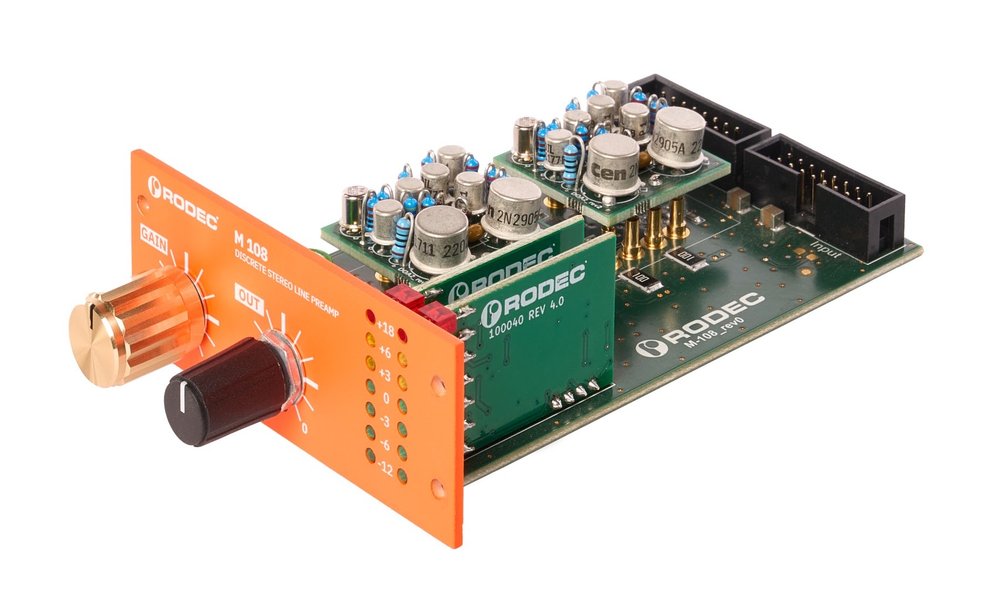

Rodec M-108 Stereo Discrete Line Preamp

The M-108 Stereo Discrete Line Preamp is a high-performance module designed to deliver superior audio quality with a versatile gain structure. It features the same Discrete Operational Amplifiers (DOAs) as the acclaimed M-501 Preamp, ensuring pristine analog sound with professional-grade performance.
Key Features
- Selectable Gain Levels:
- The Gain Knob offers precise control, allowing you to select between 30 dB or 60 dB of gain.
- A button toggle lets you switch between the two gain ranges to accommodate a wide variety of input signals.
- LED Gain Indication:
- Built-in LED indicators provide a clear visual reference for the gain level, ensuring precise adjustments and preventing clipping (or not 😁).
- Discrete Opamp Design:
- Equipped with two discrete 6-pin socketed opamps for unparalleled analog performance.
- Ships with two vintage opamps on the input stage, offering a classic, warm character.
- Opamps can be replaced or upgraded, allowing for further customization of the sonic signature.
- Output Attenuation Control:
- A dedicated output attenuation knob ensures fine-tuning of the signal level after the gain stage.
- Helps maintain full fader resolution further down the signal path, preserving dynamic control and headroom.
Applications
- Recording and Mixing:
- Perfect for bringing analog warmth and clarity to stereo line-level signals, whether in studio recording or live sound scenarios.
- Signal Path Optimization:
- The adjustable output attenuation provides precise signal control, allowing for seamless integration into complex signal chains.
- Customizable Sound:
- The socketed discrete opamps enable you to tailor the preamp’s sound to your specific preferences, making it a versatile tool for audiophiles and engineers alike.
Summary
The M-108 Stereo Discrete Line Preamp combines high-fidelity analog sound, customizable opamps, and versatile gain control to suit a wide range of audio applications. Whether you're enhancing your stereo signals, optimizing your signal path, or experimenting with vintage opamps, the M-108 is a powerful addition to any modular setup.